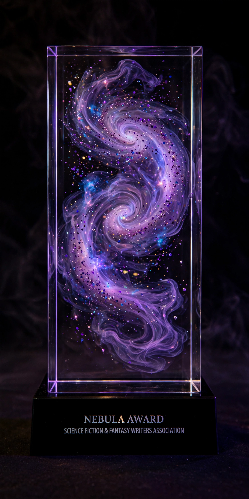

From Wikipedia, the free encyclopedia
| Nebula Award | |
|---|---|
 | |
| Awarded for | Best science fiction or fantasy works of the previous year |
| Presented by | Science Fiction and Fantasy Writers Association (SFWA) |
| First awarded | 1966 (for 1965 works) |
| Country | United States |
The Nebula Awards annually recognize the best works of science fiction or fantasy published in the United States during the previous year. They are given out by the Science Fiction and Fantasy Writers Association (SFWA) and were first awarded in 1966 for works published in 1965. Together with the fan-voted Hugo Awards, they are considered among the most prestigious honors in the genre.
The principal categories are:
Unlike the Hugos, which are voted by fans, Nebula winners are chosen by the professional members of SFWA. Members nominate works during an annual nomination period; the six works receiving the most nominations in each category (with some rules for ties) form the final ballot. The awards are presented at the annual Nebula Conference, usually in the spring.
The first Nebula Award for Best Novel went to Frank Herbert's Dune (1965). Other celebrated winning novels include Ursula K. Le Guin's The Left Hand of Darkness, Larry Niven's Ringworld, William Gibson's Neuromancer, Orson Scott Card's Ender's Game and Speaker for the Dead, and more recent winners such as N. K. Jemisin's The Fifth Season era contemporaries and Martha Wells's Network Effect. SFWA also names a Damon Knight Memorial Grand Master for lifetime achievement; recipients include Robert A. Heinlein, Isaac Asimov, Ursula K. Le Guin, and Connie Willis.